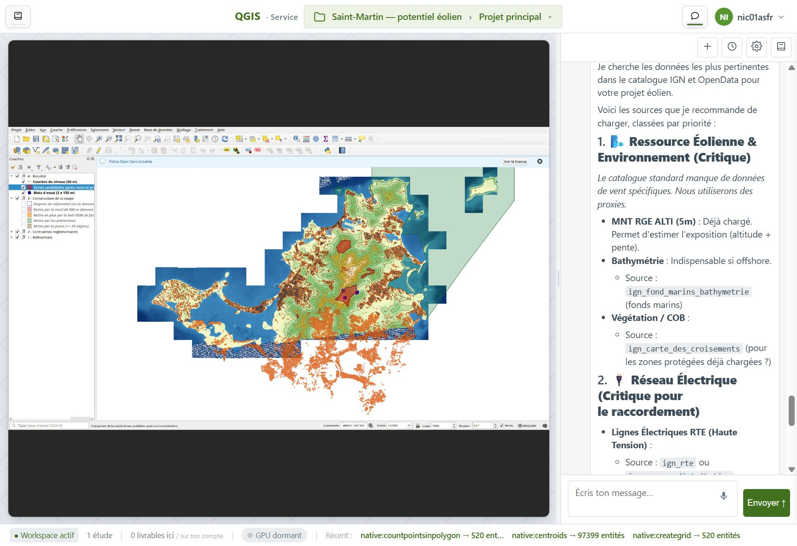
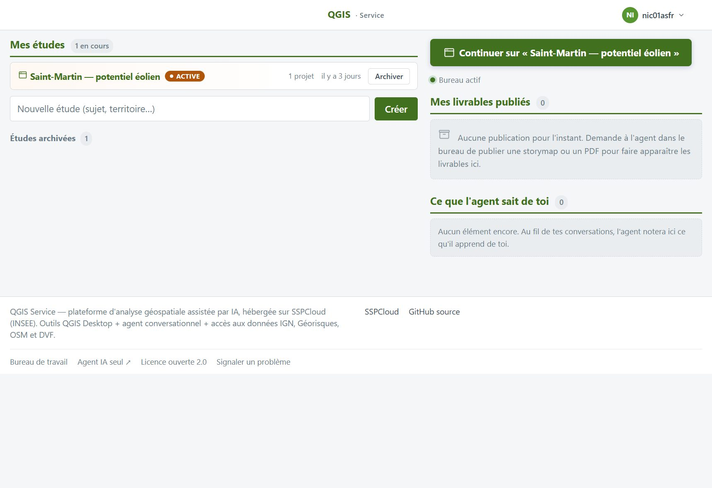
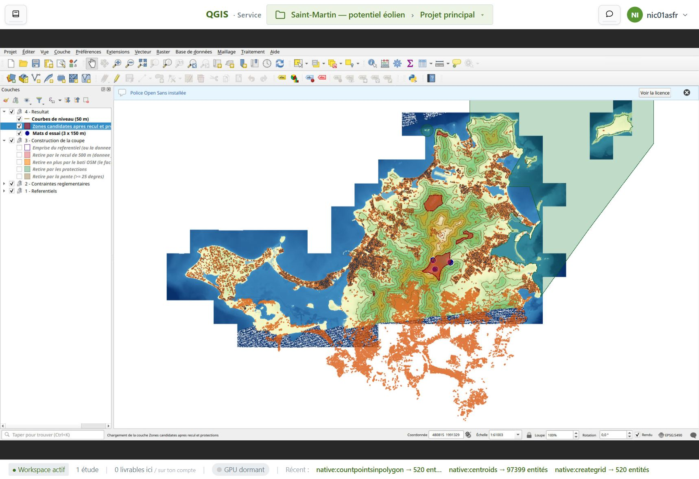
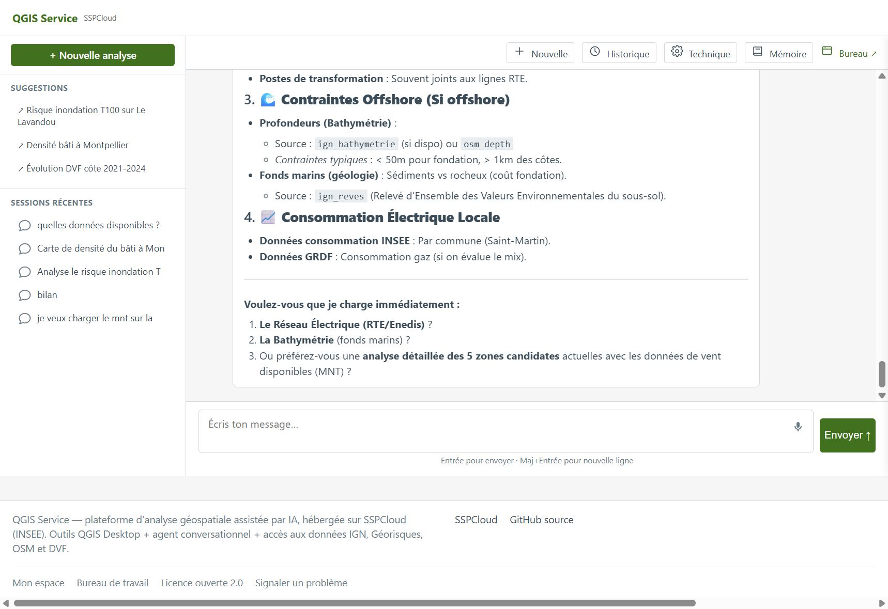

QGIS Service réunit trois pièces : un hub web (desk + workspace), un agent
conversationnel branché sur les outils QGIS, et un desktop QGIS à la demande.
Tu travailles dans le navigateur ; les données et les études restent dans ton espace SSPCloud.

Capture réelle du desk : QGIS Desktop (noVNC) et chat agent côte à côte —
étude « Saint-Martin — potentiel éolien ».
1écran : carte + agent, pas un onglet à côté
0client QGIS à installer sur ta machine
3pièces : workspace, desk, agent
Promesse Ce que ça change
Bureau QGIS, pas une démo
Un vrai QGIS Desktop (noVNC) démarré à la demande, intégré au desk —
couches, outils, canvas — sans installer de client lourd.
Agent dans le même écran
Le chat décale la carte, pas un onglet à côté. L’agent appelle les tools
QGIS / MCP, garde une mémoire par session, étude et utilisateur.
Études et ressources au même endroit
Projets, fichiers, publications : le workspace et le panneau ressources
collent au flux métier, pas à un dump de dossiers.
Livrables publiables
Storymaps, PDF, jeux de données — URL stable depuis le hub,
avec chaîne d’audit quand les traitements sont tracés.
Un credential, same-origin
Une clé hub (cookie 90 j) ; agent et desktop passent par le proxy hub —
pas de cookies croisés entre sous-domaines.
Usages Espace, bureau, agent
Mon espace — les études
Point d’entrée après login : liste des études, CTA pour reprendre le bureau actif,
livrables et mémoire agent. Même densité que le desk (navbar 48 px, accent vert).
Tu ne cherches pas un dossier sur un disque distant : tu ouvres une étude et tu continues.

Workspace — études en cours, reprise du bureau, livrables publiés.
Desk — la carte au centre
Canvas QGIS au centre, ressources en calque, barre d’état avec outils récents.
Un vrai projet QGIS (couches, traitements) dans le navigateur.
Ce n’est pas une carte web allégée : c’est le desktop SIG, démarré quand tu en as besoin.

Desk — QGIS Desktop intégré, étude et projet dans la navbar.
Agent — copilote SIG
Conversation SSE, tool-calling vers QGIS et catalogues (IGN, OSM, Géorisques…).
Page agent seule ou panneau collé au desk : même moteur.
Sinon tu jongles entre un chat générique et un SIG déconnecté.

Agent seul — suggestions, historique, lien vers le bureau.Même agent en panneau : la carte se décale, le fil reste lisible.
Parcours Le parcours
1
Tu ouvres ton espace SSPCloud
Service Jupyter avec rôle edit, puis le script d’install du dépôt — ou le chart Helm déjà publié.
2
Tu arrives sur le bureau
Login avec la clé hub ; workspace puis desk. QGIS se réveille quand tu en as besoin.
3
Tu travailles avec l’agent
Chat à côté de la carte : charger des couches, transformer, documenter — l’agent agit via les tools.
4
Tu publies
Assembler un livrable, le rendre public depuis le hub, le partager avec une URL stable.